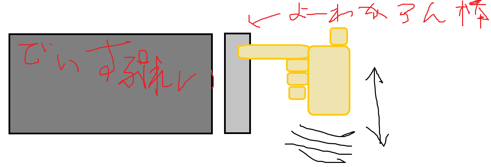
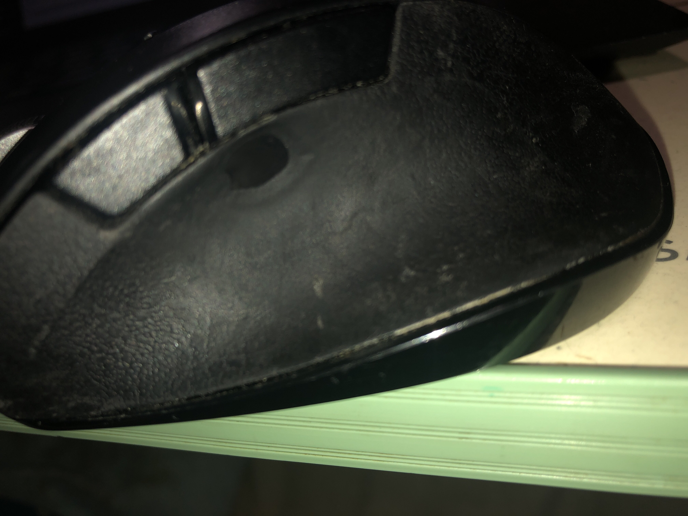

ねずみさんこんばんは
こんばんは。零阪麻琴です。
唐突ですが皆さん、手元に注目してみて下さい。そう。そこです。
カーソルはどうやって動かしてますか？大多数の方はマウスを滑らしたりタッチパッドで指を滑らしたりして動かしていると思います。
たまーにトラックボールを転がしたり、念力や指から出たレーザーで制御している方もいらっしゃると思います。あるいは、こういう方も...?

さて、今日はそんなねずみさん＝マウスのお話。
私が今まで使ってきたマウスは、ELECOMのEX-Gというやつです。お店だと「医者が勧めるマウスだ。買え！」（意訳）みたいな感じで売り込まれていますね。
手に合うというのもそうなんですが、クリック音が静かだったり戻る進むボタンがあったりと良いことがいっぱいあって之良いなと思いつつ使ってきたわけです。
が。ここに来てでかい問題が発生しました。
まずひとつ。チャタリングがひどくなってきた。これはキャンセラーソフトもあるんですが、ちょっと副作用があったりであまり使いたくないなと。
そこにもう一つ来たのが、切り替え機能が効かなくなってきた。このマウスは、Bluetooth接続を切り替えられるという機能があるんですが、それが効かなくなってきました。
正確に言うと、切り替えた先のデバイスでマウスが効かず、もう一回ペアリングしないといけない。なんのための切り替えなんですか？｛（猫）（受話器）｝
ということで、2つめのEX-Gを導入しました。そして、このEX-Gには実は違いがありました。
まず、クリック音が大きくなりました。前のEX-Gはかなり低音で、良く言えばかなり静か、悪く言えばクリックしたかわからないのです。
一方、今般導入したのはかなり高音で、悪く言えばシンプルに五月蝿い、良く言えば確実にクリックしたことがわかるものです。
また、大きな違いがあります。ホイールが効く！
実は、前のやつはホイールが効かなくなったものを譲り受けたので、当然ホイールは効きません。それでもその前に使っていたマウスより手に合うのでずっと良かったんです。
しかし、ホイールが楽だという操作は結構あります。そんなときはどうするか。
まず、ラップトップの場合はタッチパッドで二本指を滑らすとホイールと同じ動作をするのでそれで代替しています。
しかし、デスクトップ用のタッチパッドを私は持っていません。そこで先程のEX-Gよりも前に使っていたマウス（ここでは「デバネズミ」とでもしておきましょう）の出番です。
マウスを2つ並べておき、EX-Gでホイール以外の操作を行い、デバネズミでホイール操作をするという態勢をとっていました。ちなみに、デバネズミは左右クリックが効かないです。まさに凸凹コンビ。
そんな体制も今回の導入で終了です。1=1+1から1=1への変化ってのは結構すごいものです。ホイールを一つのマウスで使えるの、すごい。
ちなみにどれくらい使っていたかがわかる写真を載せておきますね。ちょっと汚いので注意。

基本的に戻る進むボタンの下に親指を置いていたので、そこの滑り止めがすり減りまくってなくなってます。その周りもエンボス加工がつるつるになってます。
ちなみに、之でデバネズミが正式にお役御免になります。概ね10年かそこら、後半は予備役兼ホイール専用機として活躍していただきました。実は私の初代マウスです。
こう考えてみると私もネットをやりはじめてかなり歴が浅いですね。今後色々頑張ってできれば生涯ネットをやりたいです。
ついでに色々書いてみますか。市川市ｺﾐｭﾆﾃｨバスで、行徳駅から塩浜の野鳥観察舎までのバスが社会実験として始まったらしいですね。
近々乗りに行って行徳交通の記事として出してみたいですね。ちなみに料金は200円だそうですが、一日券が発売される模様。
2乗車で元が取れて、3乗車以上でお得です。が、便数がかなり少ないです。一便が野鳥観察舎（あいねすと）→行徳駅→野鳥観察舎（あいねすと）の循環扱いで、朝～昼前の4周＋夕方の4周があります。
あそこお昼ごはん出してましたっけ...?もし出てたら11時の便で野鳥観察舎に来て食事とか野鳥観察とか喫茶とかして15時の便で帰るなんてことができますね。
で、ちょっとふーんと思ったことがありまして。どうやら行徳駅と行徳駅前という２つのバス停が出来るようです。この辺動画に出来ないかなぁ。
あと、今回も運行受託は京成トランジットバスさんです。京成トランジットバスさんは同じく市川市ｺﾐｭﾆﾃｨバスの南部ルートも担当していらっしゃいます。
之は余談なんですが、かつて市川市ｺﾐｭﾆﾃｨバス南部ルートを走っていたのは今のような青色のバスではなく、小豆色のバス（エルガミオってやつです。そんな私も詳しくないので年代はわかりません。）でした。
最初の方は装飾もありませんでしたが、後期になって公募されたラッピングが貼り付けられて楽しげというか元気な感じになりました。
そのバスを青色のバス4台（三台は新型のエルガミオだと思います。あとポンチョが一台。）が置き換え、小豆色のバスは各々の場所に散って今に至ります。
ちなみに、この中の１台は一度一般路線バスに戻ったあとに今度は楽天の貸し切り専属になりました。人生何があるかわかりませんが、バス車生も何があるかわかりませんね。
さて、話を戻しまして。野鳥観察舎循環バスは、そういう路線バスタイプのものではなくワンボックスタイプのバスです。田舎に行ったことがある方々ならわかるかもしれません。
また、北国分辺りにお住まいの方は北国分ルートと同じタイプと言えば合点がゆくと思います。そう、あれです。
座席が柔らかいといいなぁ...ポンチョとかはかなり座席が硬いんですよねあれ。幕張にいる連節バス（シターロ・ツインの方ね。エルガデュオはまだ乗ってない）も硬い...
こんなボヤキで終わるのもあんまよくないですね。とにかく、詳しいことは乗ってみないとわかりませんね。次の土日に乗ってみます。
それでは、お疲れ様でしたEX-Gその１さん。今後はあと8～9年くらい予備役として宜しくおねがいします。あ、ツイートボタンが丸くなってる。